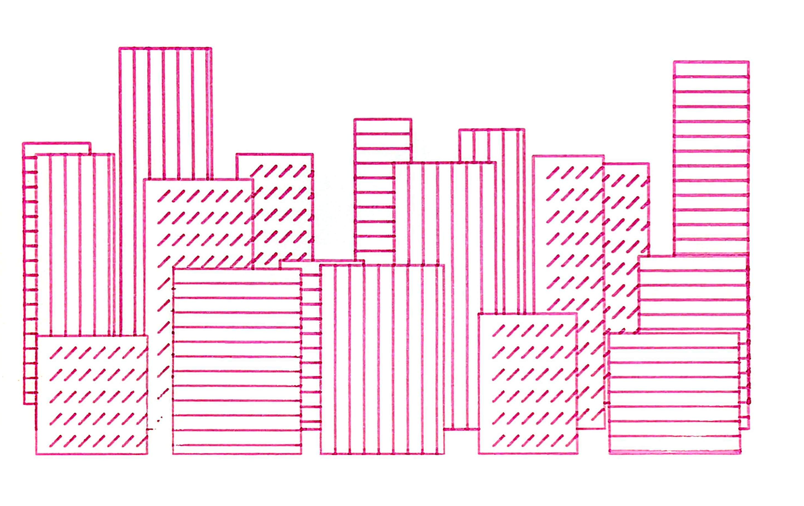
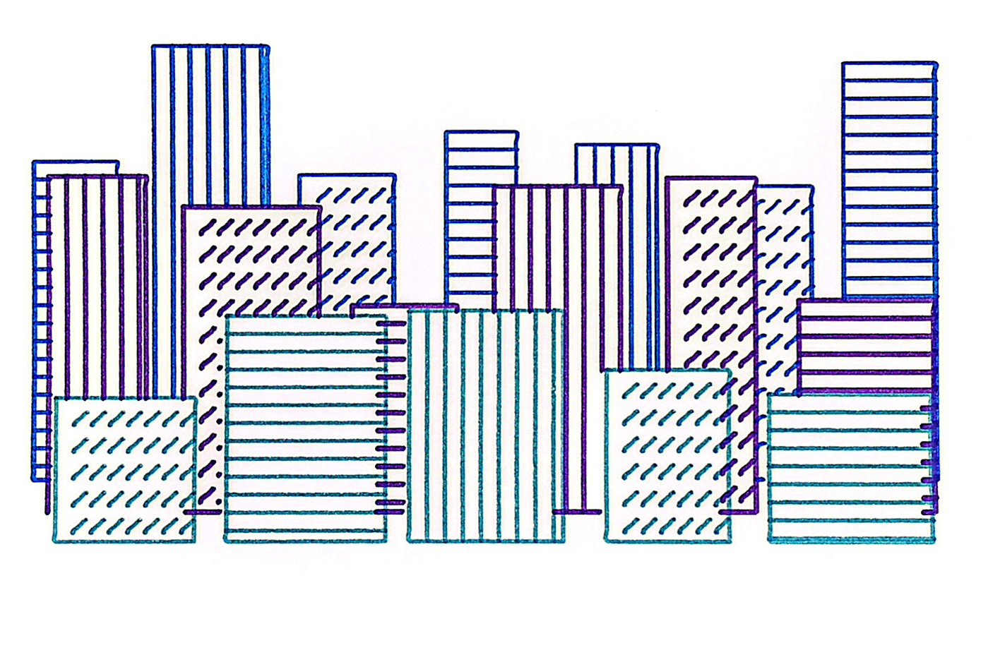
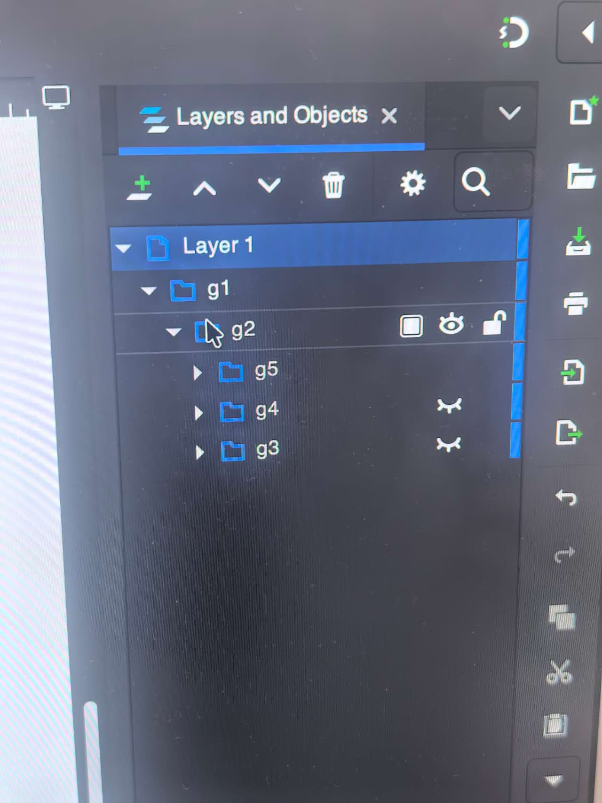
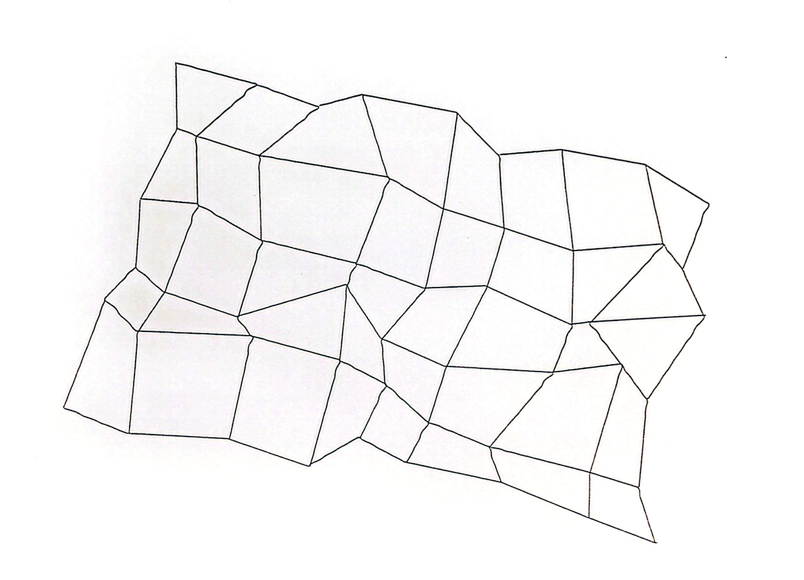

For this sketch, I first generated the drawing in p5.js and exported it as an SVG file. I then opened the SVG in Inkscape and used the iDraw pen plotter to create physical prints.
For the first experiment, I printed the entire SVG using one pen. This allowed me to see the complete composition as one continuous drawing. The repeated horizontal, vertical, and diagonal patterns created different densities even though the whole drawing used the same color.

For the second experiment, I reorganized the SVG paths in Inkscape. I grouped different paths into separate layers and printed them one group at a time. After each group was finished, I changed the pen color and continued printing on the same paper. This created a multi-color version of the same generative drawing.

I used the Layers and Objects panel in Inkscape to separate different groups of paths. This made it possible to control which parts were printed with each pen.

During the plotting process, I noticed that some of the lines were not completely straight. At first, I thought this might be caused by the pen, so I changed to a different pen and tested the drawing again. However, the same issue still appeared in the second print.
I compared the digital SVG with the physical drawing and noticed that the lines looked straight on screen but became slightly uneven after being plotted. I recorded this as one of the main issues I encountered during the printing process.

One challenge was keeping the paper and drawing position unchanged when switching pens. If the paper moved, the different color layers would no longer align correctly. I also noticed that areas with many overlapping lines took much longer to draw and sometimes became visually heavier than they appeared on the screen.
Another difference between the digital sketch and the physical print was the quality of the line. The digital version has perfectly consistent lines, while the pen plotter produces small variations depending on the pen, paper, pressure, and repeated movement. I think these small differences made the physical result more interesting.
This experiment helped me understand the difference between generating an image on screen and translating the same system into a physical drawing. At first, I treated the SVG as one finished image. After experimenting with Inkscape, I realized that the paths could also become separate physical layers. Changing pens between groups introduced another level of variation that did not exist in the original code.